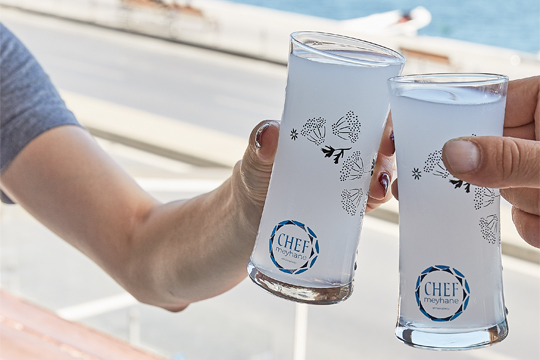
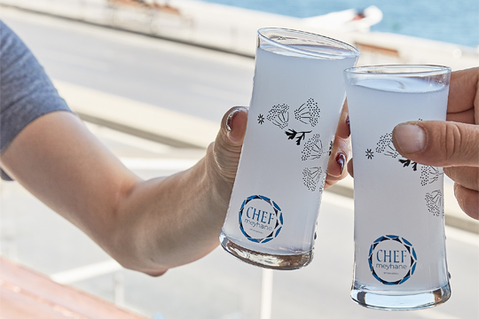

konsept


Chef Mezze ile Türkiye’de mezecilik ve meyhane konseptinin öncüsü olan Gazi Ateş’in “Meyhane nasıl olmalı?” sorusuna cevap olarak yarattığı Chef Meyhane, geleneksel lezzetleri modern bir iç mimariyle birleştiriyor. Dünyanın en sağlıklı ve lezzetli mutfaklarından biri olan, tazelik ve mevsiminde ürün kullanımıyla bilinen Girit mutfağının ağırlıkta olduğu mekanda konsept olarak da Girit’den esinlenildi. Eski Girit evlerinin mimarisini yansıtan kemerler, tel örgü dolaplar, özel şişelerde sergilenen reçel ve turşular ve seramik detaylar mekana farklı bir hava katıyor. Meze kaplarından masa ve aydınlatmalara pek çok detayda seramiğin kullanıldığı Chef Meyhane’de ünlü seramik sanatçılarıyla çalışıldı. Turkuaz ve kobalt mavisinin ağırlıkta olduğu Chef Meyhane’nin en dikkat çeken detayları yine seramikten yapılan barı ile nefis mezelerin çeşit çeşit rakıyla buluştuğu Lezzet Köşesi…
rezervasyon
Rezervasyon için aşağıdaki formu doldurabilirsiniz.
hakkımızda
Türkiye’de yepyeni lezzet konseptlerinin yaratıcısı olarak bilinen Gazi ve Bilal Ateş, Chef Mezze ile başlayan yolculuklarına Chef Grup çatısı altında hız kesmeden devam ediyor. Chef Mezze ile geleneksel meyhane anlayışına modern bir yaklaşım getiren Chef Grup, ikinci adımı olan Chef Döner’le bir “sokak lezzeti” olan döneri artizan tatlarla bir araya getirerek bir ilke daha imza attı. Son olarak “Arnavutköy’de modern bir Girit meyhanesi” konseptiyle hayata geçirilen Chef Meyhane ile Türkiye’de meze ve meyhane denince ilk akla gelen isimlerden biri olduğunu kanıtlayan Chef Grup, yepyeni lezzet projeleriyle gastronomi dünyamızda çığır açmayı sürdürecek.


 

iletişim
Arnavutköy Cad. No: 64/2 Beşiktaş
T: 0212 263 42 19 | 0530 067 50 41
E: info@chefmeyhanearnavutkoy.com